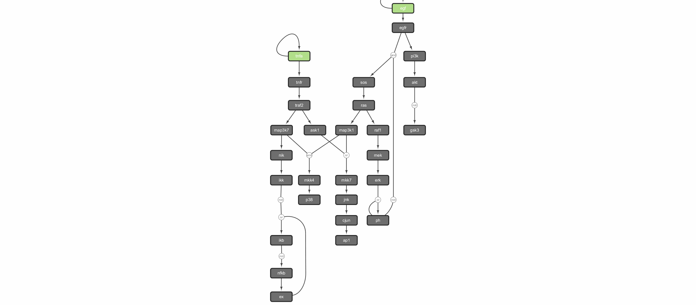
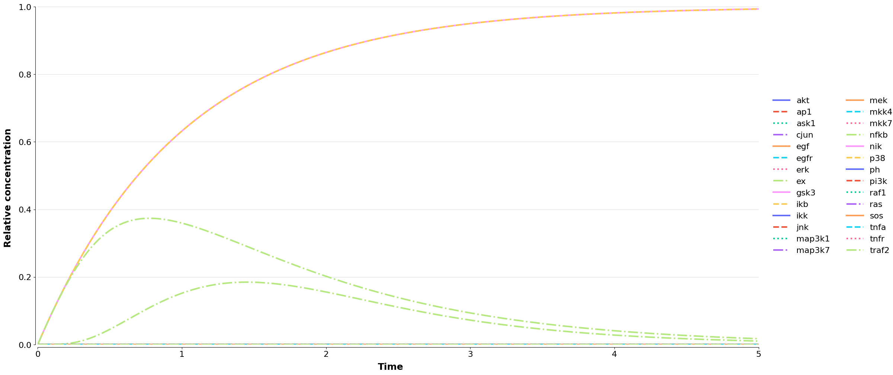
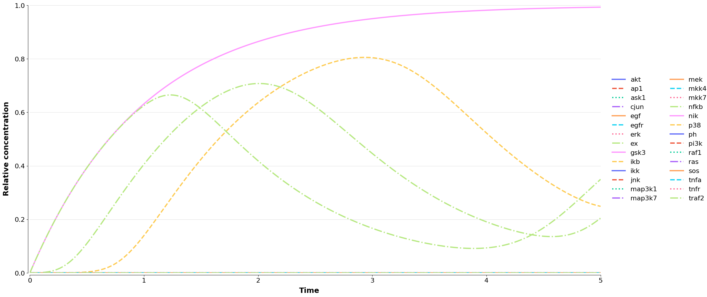
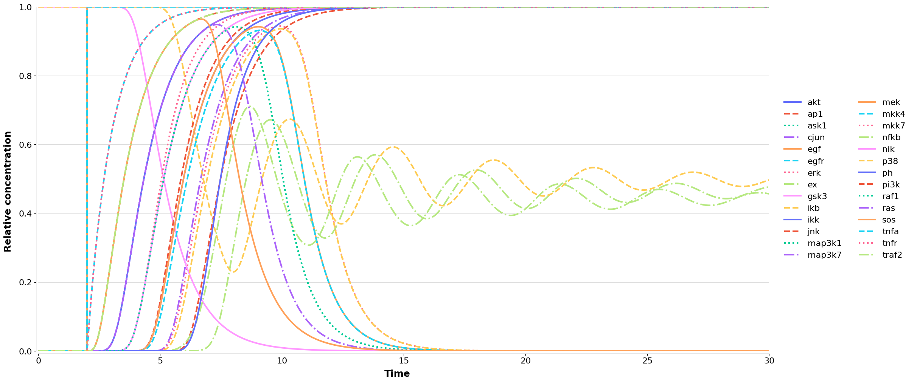

BoolDog features tutorial
Advanced demonstration of BoolDog functionalities.
[1]:
# Pretty results!
from IPython.display import display, HTML, Image
# Utilities
from pathlib import Path
[2]:
# Other tools
import py4cytoscape as p4c
[3]:
# BoolDog classes and functions
from booldog import BoolDogModel
from booldog.io.biomodels import fetch_model_info, fetch_model
INFO 2026-03-04 18:59:45,299 booldog:<module> BoolDog version: 0.1.0
[4]:
# utility print
def print_html(s):
display(HTML(
"<div style='width: 800px;'>" + \
s +\
"</div>"
))
[5]:
files_path = Path("files")
Fetch a model from BioModels
[6]:
biomodel_id="BIOMD0000000562"
model_info = fetch_model_info(model_id=biomodel_id)
print_html(model_info["description"])
This model is described in the article:
Abstract:
BACKGROUND: Qualitative frameworks, especially those based on the logical discrete formalism, are increasingly used to model regulatory and signalling networks. A major advantage of these frameworks is that they do not require precise quantitative data, and that they are well-suited for studies of large networks. While numerous groups have developed specific computational tools that provide original methods to analyse qualitative models, a standard format to exchange qualitative models has been missing. RESULTS: We present the Systems Biology Markup Language (SBML) Qualitative Models Package ("qual"), an extension of the SBML Level 3 standard designed for computer representation of qualitative models of biological networks. We demonstrate the interoperability of models via SBML qual through the analysis of a specific signalling network by three independent software tools. Furthermore, the collective effort to define the SBML qual format paved the way for the development of LogicalModel, an open-source model library, which will facilitate the adoption of the format as well as the collaborative development of algorithms to analyse qualitative models. CONCLUSIONS: SBML qual allows the exchange of qualitative models among a number of complementary software tools. SBML qual has the potential to promote collaborative work on the development of novel computational approaches, as well as on the specification and the analysis of comprehensive qualitative models of regulatory and signalling networks.
This model is hosted on BioModels Database and identified by: BIOMD0000000562.
To cite BioModels Database, please use: BioModels Database: An enhanced, curated and annotated resource for published quantitative kinetic models.
To the extent possible under law, all copyright and related or neighbouring rights to this encoded model have been dedicated to the public domain worldwide. Please refer to CC0 Public Domain Dedication for more information.
[7]:
model_info["modellingApproach"]
[7]:
{'accession': 'MAMO_0000030',
'name': 'logical model',
'resource': 'http://identifiers.org/mamo/MAMO_0000030'}
[8]:
model_file = files_path / f"{biomodel_id}.xml"
print(model_file)
if not model_file.exists():
fetch_model(biomodel_id, local_file=model_file)
files/BIOMD0000000562.xml
Import SBML-qual model
[9]:
bn = BoolDogModel.from_sbmlqual(model_file)
INFO 2026-03-04 18:59:46,031 booldog.network:__init__ Node 'egf' has no rule. Assuming 'input' node.
INFO 2026-03-04 18:59:46,031 booldog.network:__init__ Node 'tnfa' has no rule. Assuming 'input' node.
INFO 2026-03-04 18:59:46,039 booldog.network:__init__ Created Network with 28 nodes.
Load into Cytoscape
Make sure Cytoscape is running.
[10]:
_ = p4c.cytoscape_ping()
You are connected to Cytoscape!
[11]:
bn.to_cytoscape(as_logic_circuit=False)
Applying default style...
Applying preferred layout
[11]:
10330
[12]:
suid_main = bn.to_cytoscape(as_logic_circuit=True)
Applying default style...
Applying preferred layout
[13]:
# save the Cytoscape session
p4c.save_session((files_path / "tutorial-features.cys").as_posix())
This file has been overwritten.
[13]:
{}
Boolean dynamics
Case (i)
[14]:
inactive_init_state = bn.inactivate_state(); inactive_init_state
[14]:
BooleanStateSpace(network=<class 'booldog.network.BoolDogModel'> with 28 nodes, state_space=[{'akt': 0, 'ap1': 0, 'ask1': 0, 'cjun': 0, 'egf': 0, 'egfr': 0, 'erk': 0, 'ex': 0, 'gsk3': 0, 'ikb': 0, 'ikk': 0, 'jnk': 0, 'map3k1': 0, 'map3k7': 0, 'mek': 0, 'mkk4': 0, 'mkk7': 0, 'nfkb': 0, 'nik': 0, 'p38': 0, 'ph': 0, 'pi3k': 0, 'raf1': 0, 'ras': 0, 'sos': 0, 'tnfa': 0, 'tnfr': 0, 'traf2': 0}])
[15]:
bsim_inactive = bn.boolean_simulation(initial_states=inactive_init_state)
bsim_inactive.plot_stg()
WARNING The state transition graph will consist of up to 2**28=268435456 states, depending on the initial states.
[15]:

[16]:
bsim_inactive.plot_state_space()

Compare the above plots to Figure 4A.
Case (ii)
[17]:
triggered_init_state = bn.inactivate_state();
triggered_init_state.set_node_state("egf", 1)
triggered_init_state.set_node_state("tnfa", 1)
triggered_init_state
[17]:
BooleanStateSpace(network=<class 'booldog.network.BoolDogModel'> with 28 nodes, state_space=[{'akt': 0, 'ap1': 0, 'ask1': 0, 'cjun': 0, 'egf': 1, 'egfr': 0, 'erk': 0, 'ex': 0, 'gsk3': 0, 'ikb': 0, 'ikk': 0, 'jnk': 0, 'map3k1': 0, 'map3k7': 0, 'mek': 0, 'mkk4': 0, 'mkk7': 0, 'nfkb': 0, 'nik': 0, 'p38': 0, 'ph': 0, 'pi3k': 0, 'raf1': 0, 'ras': 0, 'sos': 0, 'tnfa': 1, 'tnfr': 0, 'traf2': 0}])
[18]:
bsim_triggered = bn.boolean_simulation(initial_states=triggered_init_state)
bsim_triggered.plot_stg()
WARNING The state transition graph will consist of up to 2**28=268435456 states, depending on the initial states.
[18]:

[19]:
bsim_triggered.plot_state_space()

Compare the above plots to Figure 4B.
Create animation from Boolean simulation
The animation is generated using Cytoscape, thus allowing a manual layout of the network as basis to the animation.
[20]:
gif = files_path / "triggered_ii.gif"
[21]:
# bsim_triggered.make_animation(base_suid=main_suid, gif=gif)
[22]:
Image(gif)
[22]:

Semi-quantative ODE simulations
Using the ODFy schema:
[23]:
bn.continuous_simulation(
t_max=5,
transform="normalisedhillcube"
).plot()
INFO 2026-03-04 18:59:50,697 booldog.continuous.semi_quantitative:continuous_simulation Status: Generating ODE system ...
INFO 2026-03-04 18:59:50,698 booldog.continuous.ode_factory:__init__ Creating ODE system for normalisedhillcube.
INFO 2026-03-04 18:59:50,701 booldog.continuous.semi_quantitative:continuous_simulation Status: ... done.
INFO 2026-03-04 18:59:50,702 booldog.continuous.semi_quantitative:continuous_simulation Status: Start
INFO 2026-03-04 18:59:50,928 booldog.continuous.semi_quantitative:continuous_simulation Status: End

[23]:
(<Figure size 2000x1000 with 1 Axes>, array([[<Axes: >]], dtype=object))
Using the SQUAD schema:
[24]:
bn.continuous_simulation(
t_max=5,
transform="squad"
).plot()
INFO 2026-03-04 18:59:51,441 booldog.continuous.semi_quantitative:continuous_simulation Status: Generating ODE system ...
INFO 2026-03-04 18:59:51,442 booldog.continuous.ode_factory:__init__ Creating ODE system for squad.
/home/cbleker/research/NIB/boolean-modelling/BoolDoG/booldog/continuous/ode_factory.py:463: RuntimeWarning: divide by zero encountered in divide
self._a1 = (1 + self._A1) / self._A1
/home/cbleker/research/NIB/boolean-modelling/BoolDoG/booldog/continuous/ode_factory.py:465: RuntimeWarning: divide by zero encountered in divide
self._b1 = (1 + self._B1) / self._B1
INFO 2026-03-04 18:59:51,445 booldog.continuous.semi_quantitative:continuous_simulation Status: ... done.
INFO 2026-03-04 18:59:51,445 booldog.continuous.semi_quantitative:continuous_simulation Status: Start
/home/cbleker/research/NIB/boolean-modelling/BoolDoG/booldog/continuous/ode_factory.py:479: RuntimeWarning: invalid value encountered in multiply
a = ensure_ndarray(self._a1 * a_x / (1+a_x))
/home/cbleker/research/NIB/boolean-modelling/BoolDoG/booldog/continuous/ode_factory.py:483: RuntimeWarning: invalid value encountered in multiply
b = ensure_ndarray(self._b1 * b_x / (1+b_x))
INFO 2026-03-04 18:59:51,645 booldog.continuous.semi_quantitative:continuous_simulation Status: End

[24]:
(<Figure size 2000x1000 with 1 Axes>, array([[<Axes: >]], dtype=object))
Continous simulation with an event
[25]:
# use the inactive boolean simulation steady state as the initial state
last_state = list(bsim_inactive.stg.nodes())[-1]; last_state
[25]:
'0000000011000000000000000000'
[26]:
simulation = bn.continuous_simulation(
t_max=30,
initial_state={n:s for n, s in zip(bn.node_ids, last_state)},
transform="normalisedhillcube",
node_events = [
{'time':2, 'node':'egf', 'value':1},
{'time':2, 'node':'tnfa', 'value':1}
]
)
simulation.plot()
INFO 2026-03-04 18:59:52,121 booldog.continuous.semi_quantitative:continuous_simulation Status: Generating ODE system ...
INFO 2026-03-04 18:59:52,122 booldog.continuous.ode_factory:__init__ Creating ODE system for normalisedhillcube.
INFO 2026-03-04 18:59:52,124 booldog.continuous.semi_quantitative:continuous_simulation Status: ... done.
INFO 2026-03-04 18:59:52,126 booldog.continuous.semi_quantitative:continuous_simulation Status: Start
INFO 2026-03-04 18:59:52,189 booldog.continuous.semi_quantitative:continuous_simulation Status: Event at 2.0:
egf -> 1.00 (duration 0)
tnfa -> 1.00 (duration 0)
INFO 2026-03-04 18:59:52,858 booldog.continuous.semi_quantitative:continuous_simulation Status: End

[26]:
(<Figure size 2000x1000 with 1 Axes>, array([[<Axes: >]], dtype=object))
The simulation results can be exported to a tsv file:
[27]:
simulation.export?
Signature: simulation.export(outfile, decimals=5)
Docstring:
Export simulation results to a file.
Parameters
----------
outfile : str or Path
Path to the output file. The file will be created if it does not
exist. If the file already exists, it will be overwritten.
decimals : int
Number of decimals to round the output values to. Default is 5.
Notes
-----
The output file will contain:
- nodelist
- ODE transform
- ODE parameters
- node_events
- timepoints
- solution/y
The output will be tab-separated and can be read into a pandas DataFrame.
If you want to use `pandas` to read the file, you can use the following code:
df = pd.read_csv(outfile, sep=" ")
File: ~/research/NIB/boolean-modelling/BoolDoG/booldog/simulation_result/continuous_result.py
Type: method
Lets save the plot to a SVG:
Modify the Boolean network
Possible modifications include:
update/change a node rule
remove a node
add a node
A node cannot be removed if other nodes depend on it (i.e. it occurs in their update logic). To remove such a node, either also remove all of its dependants, or first update the logic rule of its dependants to remove dependency.
[28]:
bn.nodes['ph'].rule
[28]:
'( ph | erk )'
[29]:
bn.update_node('ph', 'erk')
bn.remove_nodes(['ex', 'ikb', 'nfkb'])
bn.add_node("new", "ph | mkk4")
[30]:
print('ph -->', bn.nodes['ph'].rule)
print('new -->', bn.nodes['new'].rule)
ph --> erk
new --> ph | mkk4
[31]:
# Lists all modifications to the model
bn.modifications
[31]:
[Modification(type=ModificationTypes.UPDATE, node_id=ph, rule=erk),
Modification(type=ModificationTypes.REMOVE, node_id=['ex', 'ikb', 'nfkb'], rule=None),
Modification(type=ModificationTypes.ADD, node_id=new, rule=ph | mkk4)]
[32]:
bn.to_cytoscape(title="modified")
Applying default style...
Applying preferred layout
[32]:
11235
Export the Boolean network
BNET format
[33]:
# show
print(bn.to_bnet())
targets, factors
erk, ( mek )
ikk, ( nik )
gsk3, ( !akt )
ask1, ( traf2 )
ras, ( sos )
egf, egf
egfr, ( egf )
traf2, ( tnfr )
map3k1, ( ras )
tnfr, ( tnfa )
ap1, ( cjun )
mek, ( raf1 )
mkk4, ( map3k7 & map3k1 )
tnfa, tnfa
raf1, ( ras )
map3k7, ( traf2 )
mkk7, ( ask1 | map3k1 )
cjun, ( jnk )
sos, ( egfr & !ph )
jnk, ( mkk7 )
pi3k, ( egfr )
p38, ( mkk4 )
akt, ( pi3k )
ph, erk
nik, ( map3k7 )
new, ph | mkk4
[34]:
# save to a file
bn.to_bnet(files_path / f"{bn.modelinfo.identifier}-modified-bnet.txt")
INFO 2026-03-04 18:59:54,137 booldog.io.bnet:write_bnet Wrote model as bnet to files/MODEL1411240000-modified-bnet.txt
SBML-qual
[35]:
# save to SBML-qual
bn.to_sbmlqual(files_path / f"{bn.modelinfo.identifier}-modified-sbmlqual.xml")
INFO 2026-03-04 18:59:54,159 booldog.io.sbml:write Wrote Network as a Boolean model in SBML-qual to files/MODEL1411240000-modified-sbmlqual.xml
As a NetworkX network
In NetworkX the underlying interaction network can be analysed using common graph theoretical approaches.
[36]:
g = bn.to_networkx(as_logic_circuit=False)
[37]:
g.in_degree()
[37]:
InDegreeView({'akt': 1, 'ap1': 1, 'ask1': 1, 'cjun': 1, 'egf': 1, 'egfr': 1, 'erk': 1, 'gsk3': 1, 'ikk': 1, 'jnk': 1, 'map3k1': 1, 'map3k7': 1, 'mek': 1, 'mkk4': 2, 'mkk7': 2, 'nik': 1, 'p38': 1, 'ph': 1, 'pi3k': 1, 'raf1': 1, 'ras': 1, 'sos': 2, 'tnfa': 1, 'tnfr': 1, 'traf2': 1, 'new': 2})
[38]:
import networkx as nx
[39]:
nx.connectivity.average_node_connectivity(g)
[39]:
0.2753846153846154
[40]:
nx.centrality.degree_centrality(g)
[40]:
{'akt': 0.08,
'ap1': 0.04,
'ask1': 0.08,
'cjun': 0.08,
'egf': 0.12,
'egfr': 0.12,
'erk': 0.08,
'gsk3': 0.04,
'ikk': 0.04,
'jnk': 0.08,
'map3k1': 0.12,
'map3k7': 0.12,
'mek': 0.08,
'mkk4': 0.16,
'mkk7': 0.12,
'nik': 0.08,
'p38': 0.04,
'ph': 0.12,
'pi3k': 0.08,
'raf1': 0.08,
'ras': 0.12,
'sos': 0.12,
'tnfa': 0.12,
'tnfr': 0.08,
'traf2': 0.12,
'new': 0.08}